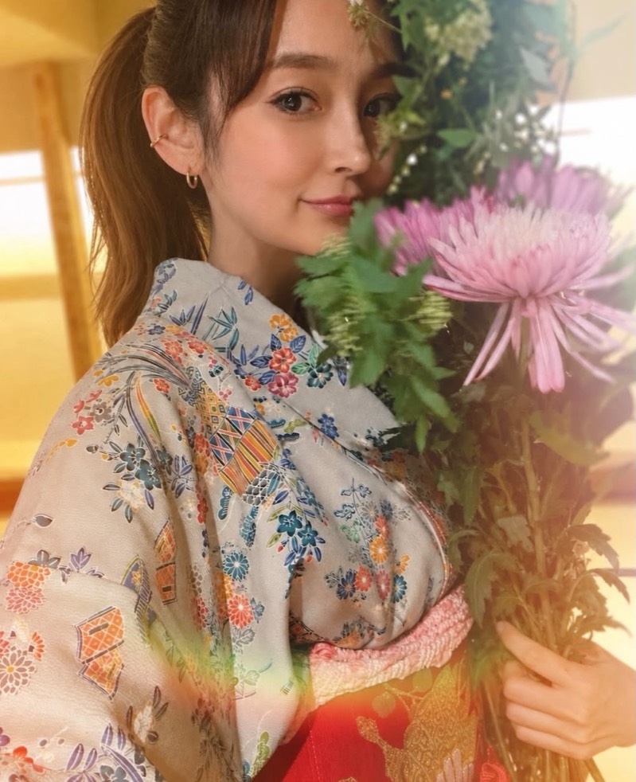
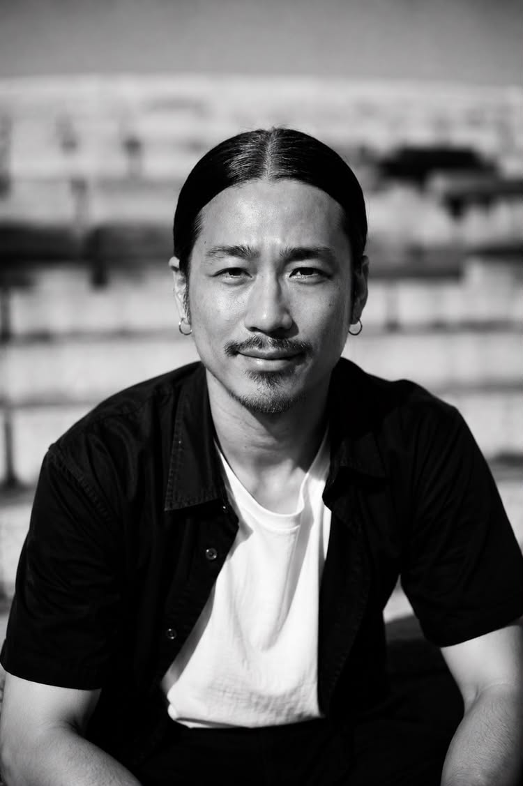

Group Exhibition
サマー カレイドスコープ
2026.8.8 SAT — 8.23 SUN
Cy Kamakura
Glass Art
SPIRALARTS 主宰・高橋祥行は 1999 年に渡米し、ボロシリケイトガラスの 第一人者ボブ・スノッドグラスに師事。「ガラスと精神性の融合」をテーマに、 国内外のアートイベントや照明演出で表現を広げる。代表作「コスモランプ」は ブルーノート東京やウェスティンホテル東京にも導入。現在は鎌倉と富山の 二拠点で活動。
Web Instagram

Ikebana
いけばな作家。茶道・華道家の祖母のもと、幼少期より華道（池坊）を始める。 一度離れたのち 3 年前から再開。陶芸家との合同展示やワークショップなどを 行う。
Instagram

PAINTER / PICTURE BOOK AUTHOR / FIGURE DESIG
新潟県出身。画家・絵本作家・フィギュアデザイナー。幼少期から漫画・ アメリカンコミック・映画などのポップカルチャーに影響を受け、オリジナル キャラクターを生み出す。絵本、絵画、ソフビなど幅広い表現でキャラクター カルチャーの新たな可能性を追求している。
Contemporary Art
浮世絵や日本伝統刺青をモチーフに、日本の伝統美を現代の感性で再解釈した 作品を制作。抽象表現を取り入れながら、自身の表現を探求している。
Graphic Designer
グラフィックデザイナーを生業とする傍ら、実験的プロジェクトとして、絵画をはじめとする造形表現を通じ、領域横断的なアートワークを試みている。 10代後半からスケーター、DJの経歴を持つ彼の創作における核心は、「ヒューマニティー」と「ストリートカルチャー」という概念の交錯にある。前者が内包する普遍性と、後者が宿す瞬間性、破壊衝動。この対立的なふたつのエレメントを止揚させることで、人間の潜在的な精神性を現代の都市的感性のもとに提示している。
3D DESIGN / ART DIRECTION
茅ヶ崎在住。国内外のアーティストのビジュアルを手がけるアートディレクター/3Dデザイナーとして、レコードやCD、アルバムアートワークのデザインからVR/ARコンテンツ、ライブやMVのビジュアライザー制作まで幅広く活動している。